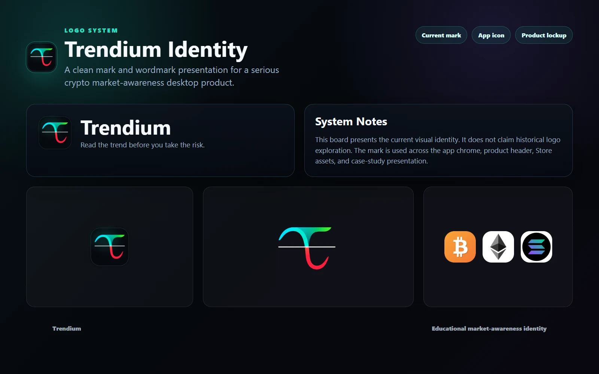
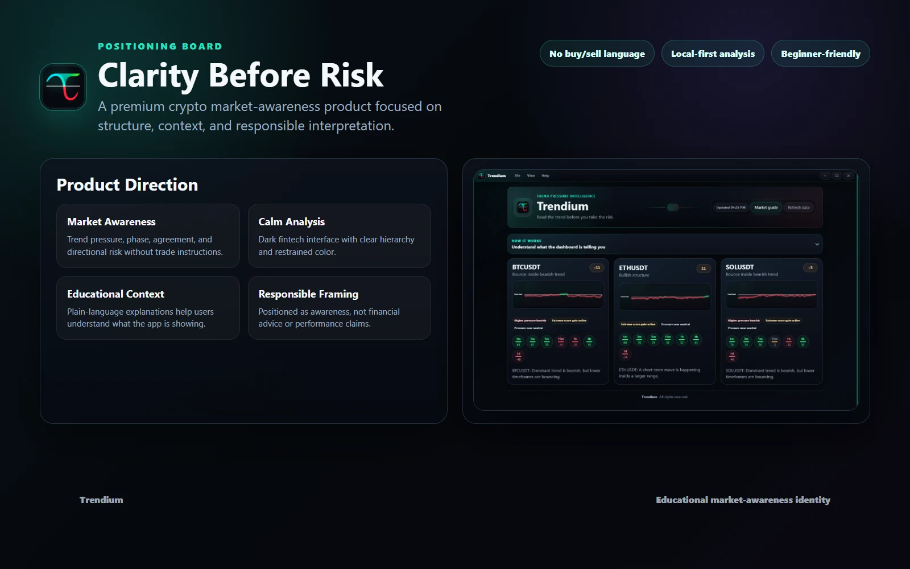
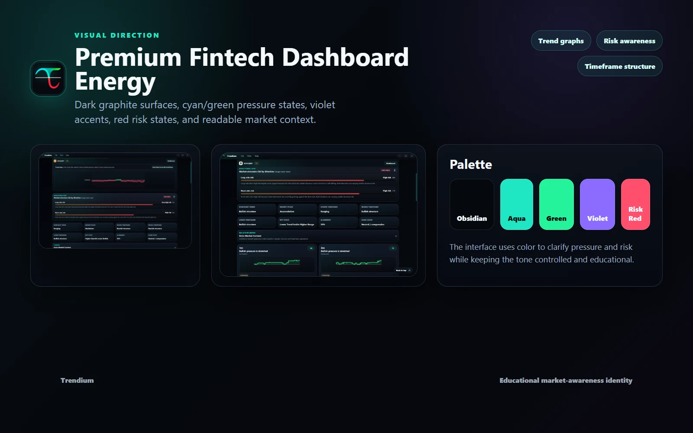
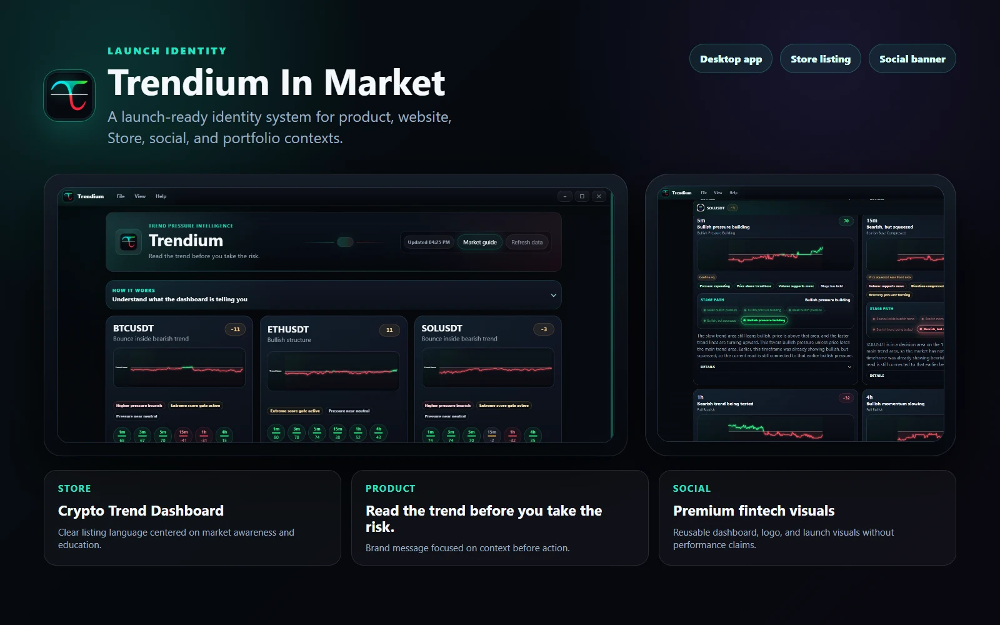

Clarity over hype
The brand language avoids exaggerated trading promises and supports the product's educational market-awareness position.
Brand Identity · Creative Direction
A focused identity system for a released crypto market-awareness product. This case study covers the brand layer of the larger Trendium product: name presentation, visual tone, trust signals, and responsible fintech communication.

Challenge
Trendium needed to sit between analytical finance tools and educational product design. The identity had to feel sharp enough for market data, but not imply signals, predictions, or guaranteed outcomes.
Direction
The brand language avoids exaggerated trading promises and supports the product's educational market-awareness position.
Electric cyan and deep surfaces create a technical, active feel without overwhelming the interface.
Structured spacing, restrained contrast, and dashboard-aligned visuals help the product feel more deliberate and less speculative.
The identity was shaped to work inside the app, website, icons, metadata, and release materials.
Process
Brand Assets



Outcome
The final direction gives Trendium a clear identity foundation for app presentation, launch communication, and future product evolution while keeping the product framed as market awareness rather than financial advice.
Let’s talk about your next project
Tell me what you’re building.
We’ll find the right starting point together.